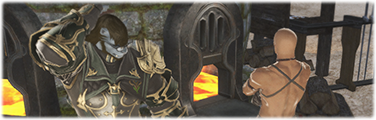

| Quest Giver | Gerolt |
|---|---|
| Location | Gangos (x:6.3, y:5.0) |
| Previous Quest |
|
Deliver 1 Thavnairian Scalepowder, obtained through the quest for free, to Gerolt in Gangos.
1 Thavnairian Scalepowder
This step only happens once! All additional weapons have to be done through the quest "Resistance is (Not)
Futile"
| Quest Giver | Zlatan |
|---|---|
| Location | Gangos (x:6.3, y:5.1) |
| Previous Quest |
|
Purchase 4 Thavnairian Scalepowder for 1000 Allagan Tomestones of Poetics (250 each) from any of the following vendors:
4 Thavnairian Scalepowder
- Auriana - Mor Dhona (x:22.7, y:6.6)
- Hismena - Idyllshire (x:5.7, y:5.2)
- Rowena's Representative - Limsa Lominsa Lower Decks (x:9.0, y:11.1)
- Rowena's Representative - Ul'dah Steps of Nald (x:9.0, y:8.3)
- Rowena's Representative - New Gridania (x:11.9, y:12.3)
- Rowena's Representative - Foundation (x:10.5, y:11.8)
- Rowena's Representative - Kugane (x:12.2, y:10.8)
Deliver 4 Thavnairian Scalepowder to Zlatan in Gangos.
Resistance Weapons (iLvl 485)